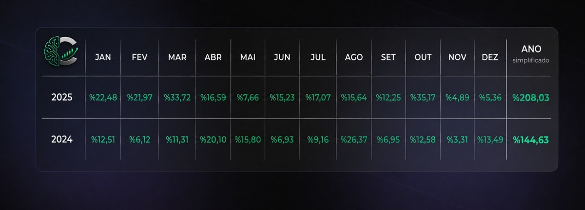
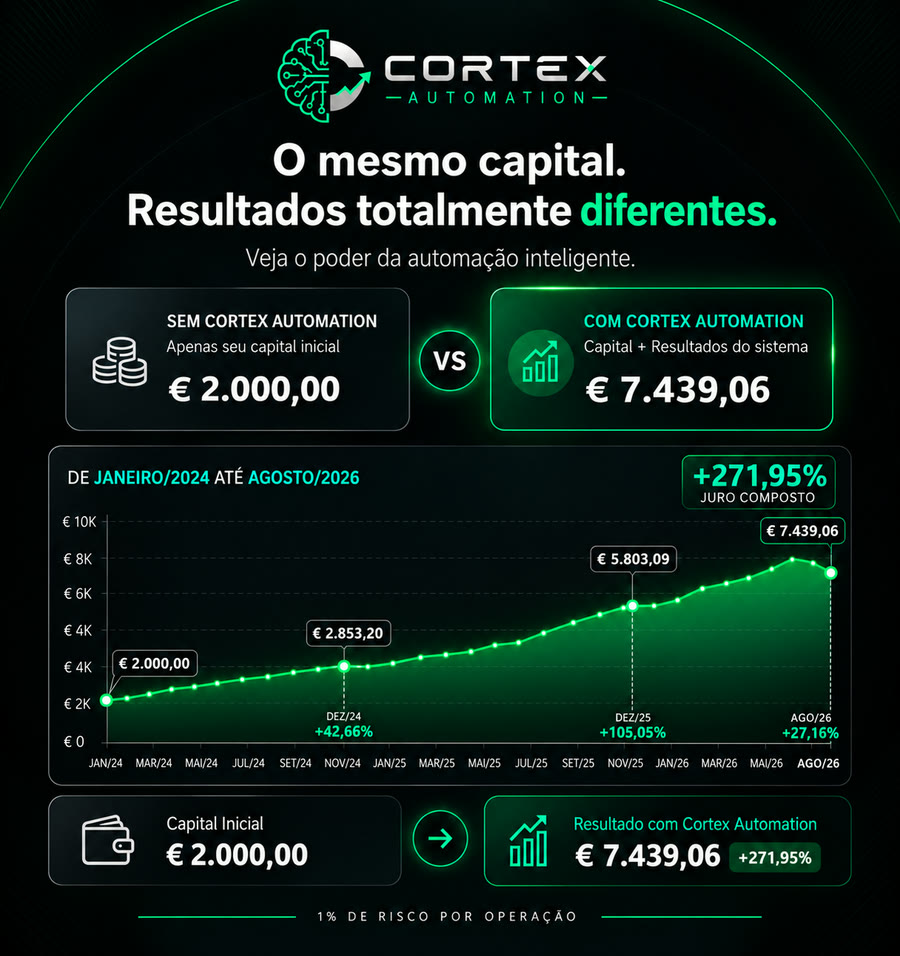

Quem quer transparência total
Vê cada operação em tempo real, na sua própria conta, e mantém o controlo do dinheiro a todo o momento.
Veja em 1 minuto como o algoritmo trabalha dentro da sua própria conta de corretora. Sem adesão, sem mensalidades.
Não foi possível reproduzir o vídeo aqui. Abrir num separador novo.
Investir manualmente exige tempo, estudo e controlo emocional. Três coisas que quase ninguém tem ao mesmo tempo.
O nosso algoritmo foi desenvolvido e aperfeiçoado ao longo de anos. Executa uma estratégia de forma automática, consistente e sem emoções, 24 horas por dia, 7 dias por semana — com uma rentabilidade histórica consistente e comprovada.
Você segue a sua vida. O algoritmo investe no mercado quando aparecem oportunidades.
De forma consistente e sem sobressaltos — mesmo com zero experiência em investimentos. Não precisa de saber ler um gráfico para começar.
Vê cada operação em tempo real, na sua própria conta, e mantém o controlo do dinheiro a todo o momento.
Quem já tem poupanças, imóveis ou índices e procura algo automatizado que não siga exactamente os mesmos ciclos.
O algoritmo trata da análise e da execução. Acompanhamos o processo do princípio ao fim, sem jargão.
Quem trabalha o dia todo e quer uma solução que funcione sozinha, sem exigir atenção diária ao mercado.
Veja a diferença entre o seu dinheiro parado — ou investido no nosso sistema, a fazer a média mensal composta de +4,91% registada desde Janeiro de 2024, ao longo do tempo.
Média mensal composta dos 32 meses de conta real, de Janeiro de 2024 a Agosto de 2026 (+363,06% no total), com 1% de risco por operação.
Projecção de juro composto aplicando a média mensal composta de +4,91% — o resultado real dos 32 meses entre Janeiro de 2024 e Agosto de 2026. Resultados passados não garantem resultados futuros.
Não transfere dinheiro para nós. Abre uma conta de trading em seu nome, deposita directamente nessa conta e liga-a à Cortex Automation. A partir daí, o algoritmo trata da execução automática da estratégia.
Primeiro, esclarecemos tudo. Sem compromisso.
Na sua conta. Aberta na corretora com os seus dados, o seu email e as suas credenciais. É sua, ponto final.
Menos de 5 minutosEscolhe o valor que quer investir. Os fundos ficam sempre na sua conta de corretora.
Zero transferências para nósO algoritmo começa a trabalhar. A ligação só executa operações — não permite levantamentos nem transferências.
As operações e o desempenho ficam visíveis na sua conta. Levanta fundos quando quiser, ou deixa o sistema continuar.
Desliga a ligação e a automatização termina. Não há prazo, penalização nem pedido a fazer.
Em vez de depender de RSI, MACD ou médias móveis, o sistema analisa o preço e a estrutura do mercado em tempo real — máximos, mínimos, tendências e zonas de ruptura.
As decisões partem directamente do que o mercado está a fazer, e não de fórmulas que reagem depois do movimento.
A estrutura e os níveis são recalculados à medida que o mercado evolui, sem ficar preso a leituras antigas.
Cada operação tem stop-loss e gestão automática de posição, com 1% de risco por operação na conta real verificada.
O sistema deixa correr os movimentos fortes e reduz a exposição quando as condições enfraquecem.
Conta real, dinheiro real e 1% de risco por operação. Todos os resultados estão aqui — incluindo os meses negativos. O relatório completo permite confirmar cada número.
Valores da conta real, mês a mês. Agosto fechou negativo — está aqui na mesma.
Os números desta página vêm de uma conta real, em MetaTrader 5, com dinheiro real e 1% de risco por operação. Não é simulação nem backtest. Os meses negativos estão cá, tal como os bons.
Os resultados apresentados correspondem ao histórico passado e não garantem resultados futuros.
32 meses fechados · Janeiro de 2024 a Agosto de 2026
O relatório completo inclui a lógica do algoritmo, os extractos da conta no MetaTrader 5, o histórico mensal e as informações de risco.
Fica aqui mesmo. Apenas nome e email.
Resultados mensais da conta real, com o total simples, o total composto e a maior oscilação de cada ano.

Juro composto, com 1% de risco por operação.
Drawdown (ou oscilação) corresponde à queda temporária de uma conta desde o seu máximo anterior até ao mínimo seguinte. Resultados passados não garantem resultados futuros.

+363,06% de rendibilidade composta total desde Janeiro de 2024 — 32 meses, 29 deles positivos — com uma quebra máxima histórica de apenas 9,20%.
O nosso algoritmo analisa as estruturas de mercado em tempo real e executa transacções 24 horas por dia, 7 dias por semana — o Bitcoin não fecha ao fim-de-semana — sem intervenção manual.
Apenas 1% de risco por operação, com stop-loss obrigatório e gestão adaptativa de posições. É isso que mantém o drawdown máximo abaixo dos 10% em três anos de histórico.
Todas as transacções são reflectidas directamente na sua conta de negociação pessoal, dando-lhe visibilidade total e controlo total sobre os seus fundos em todos os momentos.
Qualquer pessoa mostra um mês bom. O que conta é perceber como o sistema se comporta quando as condições ficam difíceis — e quais são as regras definidas antes disso acontecer.
O risco é definido em 1% por operação, e foi esse o nível utilizado em todo o histórico apresentado.
Se a conta atingir esse limite, o sistema pára. É uma regra definida à partida — não é um resultado histórico.
Em fases difíceis, o sistema pode reduzir a exposição e seguir as regras de risco definidas.
Nos 32 meses de conta real apresentados, a maior queda do topo ao fundo foi de 9,20%.
Mais de cinco anos de desenvolvimento e testes da estratégia, atravessando diferentes regimes de mercado, períodos de maior volatilidade e fases de tendência e de correcção.
Os resultados apresentados nesta página correspondem, no entanto, exclusivamente aos 32 meses de conta real, de Janeiro de 2024 a Agosto de 2026.
Mesmo em períodos de maior volatilidade, a estratégia manteve as regras de risco definidas e uma abordagem disciplinada à exposição.
Do ponto mais alto ao ponto mais baixo de cada período.
Uma queda faz parte de qualquer investimento. Estes valores servem apenas como referência para contextualizar a magnitude das oscilações observadas.
Nota: drawdown corresponde à queda temporária de uma conta desde o seu máximo anterior até ao mínimo seguinte. Resultados passados não garantem resultados futuros.
Sem taxa de adesão nem mensalidade. O capital permanece na sua conta pessoal de corretora e a Cortex é remunerada apenas através de uma percentagem do lucro de cada mês, de acordo com o escalão escolhido. Mês sem lucro, zero a pagar.
Sem taxa de adesão · Sem mensalidade
Sem lucro, não há remuneração para a Cortex
Sem taxa de adesão · Sem mensalidade
Sem lucro, não há remuneração para a Cortex
Sem taxa de adesão · Sem mensalidade
Sem lucro, não há remuneração para a Cortex
No mês seguinte, se não houver lucro, não é cobrado nada.
O capital permanece sempre na sua conta pessoal de corretora. A percentagem é aplicada apenas ao lucro efectivo gerado pelo sistema — não existe comissão sobre o capital depositado. Em períodos sem lucro, não há remuneração para a Cortex.
Quero saber maisA automatização envolve risco de perda de capital. Os resultados apresentados são históricos e não garantem resultados futuros. Custos eventualmente cobrados pela corretora — spreads, comissões ou swaps — não estão incluídos na remuneração da Cortex. As regras de cálculo da partilha de lucro constam por inteiro dos Termos e Condições.
O algoritmo não recebe nem guarda o seu capital. O dinheiro permanece na sua conta de corretora, em seu nome e sob o seu controlo. A Cortex fornece a tecnologia que automatiza a execução da estratégia.
Conta aberta em seu nome, directamente na corretora. Os depósitos e levantamentos são realizados por si.
A ligação usada pelo sistema é configurada apenas para executar operações: abrir, gerir e fechar posições. Não permite levantamentos nem transferências de fundos.
O dinheiro não é entregue à Cortex nem fica depositado connosco. Pode solicitar levantamentos através da sua corretora, sujeito às condições aplicáveis.
Pode interromper a automatização a qualquer momento. Desliga a ligação e a execução termina.
Acompanhe o desempenho e o histórico de operações, com informação sobre rentabilidade, oscilações e outros indicadores da estratégia.
Só somos remunerados quando existe lucro. Sem lucro, não há remuneração para a Cortex.
Nós fornecemos a tecnologia.
O algoritmo executa a estratégia.
O dinheiro permanece na sua conta.
Se a sua dúvida não estiver aqui, mande mensagem. Respondemos a tudo — incluindo ao que não é confortável responder.
É uma plataforma de trading automatizado com inteligência artificial, com mais de 600 membros activos. O algoritmo executa as operações automaticamente na sua conta pessoal de negociação, e você mantém o controlo total dos fundos a todo o momento.
Funcionamos num modelo baseado em desempenho: só cobramos uma partilha de lucro quando são gerados resultados positivos. Sem taxa de adesão. Sem mensalidades.
Não se preocupe: começar a utilizar a Cortex Automation é simples, mesmo que não tenha experiência prévia. A nossa tecnologia de negociação automatizada foi concebida para tratar da análise e da execução por si, recorrendo a sistemas avançados que aprendem e optimizam continuamente com base nas condições do mercado.
Mantém total visibilidade da sua conta em todos os momentos, e a nossa equipa de apoio está sempre disponível caso tenha alguma dúvida ao longo do processo.
O sistema funciona com um motor baseado em estrutura de mercado, que lê os movimentos de preço em tempo real. Em vez de depender de indicadores atrasados, identifica continuamente a estrutura mais recente do mercado — máximos, mínimos e potenciais zonas de ruptura.
Sempre que o mercado forma uma nova estrutura, o sistema recalcula os níveis relevantes e posiciona-se em conformidade. Quando o preço atinge um desses níveis, executa automaticamente uma compra ou uma venda alinhada com a tendência dominante.
Não. Os fundos permanecem a 100% na sua conta pessoal de negociação, a todo o momento. Nunca detemos, gerimos nem temos acesso directo ao seu capital.
A ligação é feita através de uma API segura que só permite a execução de operações — podemos colocar ordens em seu nome, mas não podemos levantar fundos. Mantém o controlo completo e pode desligar quando quiser.
Directamente na sua própria conta de corretora, criada em seu nome e com as suas credenciais de acesso. É isto que garante que mantém o controlo total do capital a todo o momento.
A Cortex Automation não detém fundos de clientes nem pode fazer levantamentos da sua conta.
Sem taxa de adesão e sem mensalidade. A Cortex é remunerada apenas por uma percentagem do lucro gerado, de acordo com o escalão:
Standard (capital de 500 € a 999 €): 40% Cortex / 60% cliente. Pro (1 000 € a 9 999 €): 25% / 75%. VIP (10 000 € ou mais): 20% / 80%.
O cálculo é simples: a percentagem incide sobre o lucro do mês, nunca sobre o capital depositado. Se o mês fechar com +10% de lucro, a partilha aplica-se a esses 10%. Se o mês fechar sem lucro, não é cobrado absolutamente nada — sem mínimos, sem mensalidade e sem ficar nada em dívida para o mês seguinte.
Custos cobrados pela corretora (spreads, comissões, swaps) são alheios a este modelo. As regras completas constam dos Termos e Condições.
O capital mínimo para começar é 500 €, o que corresponde ao escalão Standard (60% do lucro para si, 40% para a Cortex).
Recomendamos começar com um valor com que se sinta confortável e que possa arriscar. Muitos membros começam no mínimo, acompanham os resultados durante alguns meses e só depois passam para Pro ou VIP, onde a partilha é mais favorável.
Todo o trading envolve risco, e a rentabilidade passada não é indicativa de resultados futuros. Ainda que o sistema tenha demonstrado um desempenho histórico forte — +363,06% de retorno composto desde Janeiro de 2024, com um drawdown máximo histórico de 9,20% e apenas 1% de risco por operação — as condições de mercado podem mudar a qualquer momento.
O sistema foi concebido para se adaptar à evolução das estruturas de mercado e inclui controlos de risco integrados para ajudar a gerir a exposição, mas nenhuma estratégia elimina o risco por completo. Deve alocar apenas capital que esteja totalmente preparado para arriscar.
As métricas históricas — resultados mensais e drawdowns — reflectem como a estratégia se comportou no passado, mas não garantem resultados semelhantes no futuro. Em 32 meses, 3 fecharam negativos.
Sim, sem qualquer restrição. Como os fundos permanecem na sua conta pessoal de negociação, tem 100% do controlo e pode levantar a qualquer momento através da corretora.
Não existem períodos de bloqueio, taxas de levantamento da nossa parte nem penalizações. O algoritmo limita-se a executar operações — o capital continua sempre sob o seu controlo.
Demora cerca de 10 minutos:
1) Fale connosco e esclareça as dúvidas todas. 2) Crie a conta na corretora recomendada — damos acompanhamento. 3) Deposite o valor com que quer começar. 4) Ligue o sistema à sua conta. 5) A partir daí é automático, e acompanha tudo em tempo real.
A nossa equipa acompanha-o em cada passo.
Não tem de acreditar em nós. Temos uma conta real verificada — dinheiro real, corretora real, MetaTrader 5 — e o relatório completo traz os extractos integrais, mês a mês, com o drawdown de cada mês e a ligação para verificação independente. É só pedir: enviamos na hora.
Mostramos todos os meses, incluindo os negativos (Fevereiro e Dezembro de 2024, Agosto de 2026). Publicamos também o resultado de cada semana no canal de Telegram — incluindo as semanas más.
Não. A Cortex Automation não presta aconselhamento financeiro nem recomendações personalizadas de investimento, e nada nesta página deve ser interpretado como tal. Disponibilizamos acesso a um sistema de execução automatizada e explicamos como funciona.
A decisão de investir, o montante e a avaliação da adequação ao seu perfil são inteiramente da sua responsabilidade. Se tiver dúvidas, procure um profissional certificado.
Ficou alguma dúvida por responder? Fale directamente connosco.
Enviar mensagem